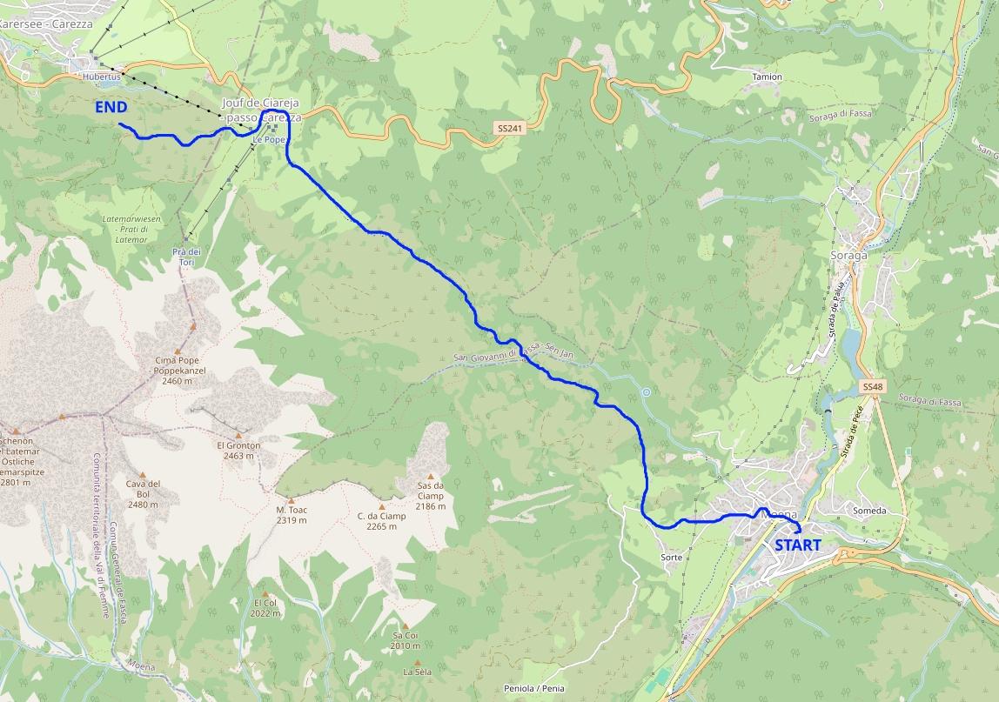
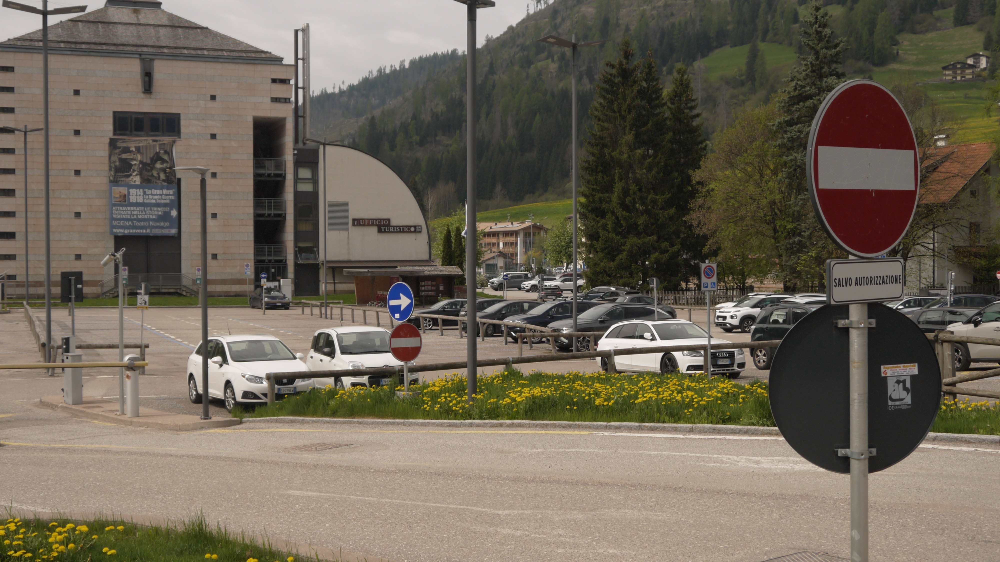
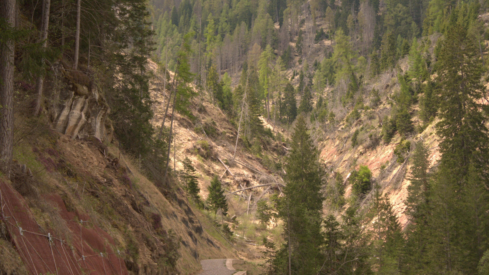

Giovanni's Diary > Subjects > Reading > Surroundings > Chapters >
Moena - Passo Carezza
Today we hare taking a walk from the village of Moena in Val di Fassa to the locality of passo Carezza, touching the province of Bolzano beneath the Latemar mountain group.

Figure 1: Path taken on map
The village of Moena is a beautiful place in a beautiful valley that could enjoy some good peace if It weren't for the tourists. We park the car just south of the city centre in a free parking lot (even if some old signs tell otherwise). From here you can go to the north or to the south following the river down in the valley next to some small villages and localities. Alternatively, you could go west or east to face some elevation and a better landscape from above. We choose to go west towards the locality of Carezza, for an easy and enjoyable walk.

Figure 2: Parking lot
Just after getting off the car, we had breakfast at "Caffe' Moena" and visited the church. The inside felt huge and empty, as if It could contain thousands of people but only we were present to fill the space. We proceeded north-west to a beautiful dandelion field where we took some pictures. I kept joking about the tourists taking pictures here.

Figure 3: Flower field
Off we go following the 519A.

Figure 4: SAT Sign

Figure 5: Moena village from above
The leftovers of Vaia sotrm can still be witnessed all around us. In 2018 a powerful storm hit the region, taking down most if not all of the trees of entire mountains and creating a post-apocalyptic landscape. The view is terrible and it will take a long time to repopulate the mountain with new trees. This is where we had lunch.

Figure 6: Destruction of vaia
The path keeps going for 2 hours until the area opens up towards the town of Carezza. The view here is majestic, It totally deserves the walk. A little trivia: we went to this specific spot because It was marked by someone as a beautiful view in an app, so every time we were thinking of going back I went like "we need to see the beautiful view that some random guy marked".

Figure 7: View
We enjoyed the view and went back from the same path, singing mountain songs.
Travel: Surroundings, Index